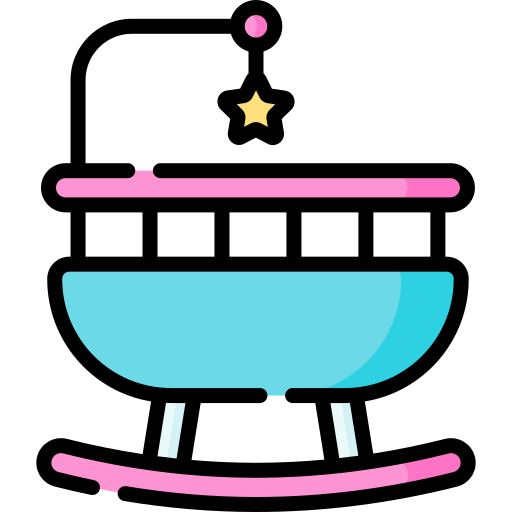

Higiene e troca de fraldas são realizadas regularmente para manter a limpeza e o conforto dos bebês. A alimentação é supervisionada conforme a orientação dos pais, seguindo horários estabelecidos.

Brincadeiras e atividades são planejadas para estimular o desenvolvimento motor e cognitivo dos bebês. Música suave, histórias e brinquedos são utilizados para promover a interação e o aprendizado.

O banho é realizado em horários adequados e com muito cuidado para garantir a segurança dos bebês. A água é aquecida para proporcionar conforto durante o momento do banho.

As atividades dos bebês são monitoradas constantemente para garantir seu bem-estar. A equipe do berçário mantém uma comunicação constante com os pais, compartilhando informações importantes sobre o dia a dia dos bebês.